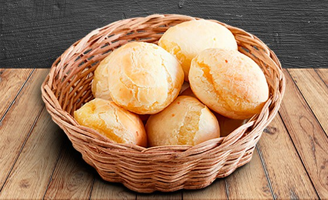

Yucca Bread
Home

Description
El pan de yuca se prepara varios países latinos y tienen diferentes variaciones/formas de prepararlo. Se conoce también como chipas en Paraguay/Argentina, cuñape en Bolivia, y pao de queijo en Brasil.
Ingredients
- 2.5 tazas de almidón de yuca.
- 4 tazas de queso rallado.
- 1 cucharadita de polvo de hornear.
- Una pizca de sal.
- 4 onzas de mantequilla a temperatura ambiente.
- 2 huevos
- 2-4 cucharadas de agua
Steps
- Combine la harina o almidón de yuca, el queso, el polvo de hornear y la sal en el procesador de alimentos, mezcle bien.
- Añadir la mantequilla y los huevos, mezclar hasta que empiecen a formarse unas bolas pequeñas de masa.
- Saque la masa del procesador y forme una bola con la masa, puede guardar la masa por hasta un día en la refrigeradora.
- Para preparar la masa del pan de yuca sin el procesador de alimentos, ponga todos los ingredientes en un bol y mezcle bien hasta tener una masa suave y homogénea.
Precaliente el horno a 500F.
- Forme los panes en bolas pequeñitas y ponga en una lata engrasada.
- Para mejores resultados ponga los panes en la refrigeradora durante unos 30 minutos antes de hornear. Las bolitas se pueden preparar de antemano y guardar refrigerados. También se pueden congelar y hornear directamente congelados.
- Horneé por aproximadamente 7 minutos y encienda el broiler o parrilla del horno hasta que los panes estén dorados, aproximadamente unos 3-5 minutos.
- Sirva los panes de yuca enseguida, solos o con yougurt